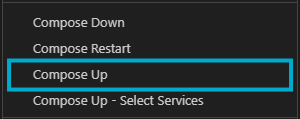
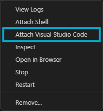

Installation
Clone the repository.
Install the Docker and Dev Containers extensions.
Navigate to the
docker-compose.ymlfile and right-click ‘Compose Up’ to start the container (Ensure Docker Desktop is running).
If you don’t have a dedicated Nvidia graphics card, please use the docker-compose-no-gpu.yml file.
Attach a Visual Studio Code to the running container by right-clicking on the running container in the Docker extension tab, and selecting ‘Attach Visual Studio Code’.
Once attached to the running container, open a new terminal in the directory
/homeand build the ROS workspace by running:
bash build.bash
Expected output:
Building ROS project...
Command succeeded: bash -c 'cd /home/ros && source /opt/ros/humble/setup.bash && colcon build --packages-select interfaces_pkg'
Starting >>> interfaces_pkg
Finished <<< interfaces_pkg [10.9s]
Summary: 1 package finished [11.4s]
Command succeeded: bash -c 'cd /home/ros && source /opt/ros/humble/setup.bash && colcon build --symlink
Starting >>> examples_pkg
Starting >>> playground_pkg
Starting >>> ros_tcp_endpoint
Finished <<< examples_pkg [3.34s]
Finished <<< playground_pkg [3.50s]
Finished <<< ros_tcp_endpoint [3.66s]
Summary: 3 packages finished [4.09s]
ROS project built successfully!
Repository Structure
The only files you should be modifying here are the config files and the custom models to add your own torch architectures.
├── configs/
│ └── algorithm_config.yaml
├── experiments/
│ └── [Environment ID]/
│ └── [Algorithm]/
│ └── [Experiment Name]/
├── rl_pipeline/
│ ├── models/
│ │ ├── [Custom Blocks]
│ │ └── [Custom Feature Extractors]
│ ├── run/
│ │ └── rl_trainer.py
│ └── utils/
│ └── [Utility Scripts]
├── play.py
└── train.py
Note
configs/: Contains YAML configuration files for experiments. Here everything related to the trainig is set up, you’ll find specific example configurations for each algorithm including all the hyperparameters.
experiments/: Stores experiment data and results locally.
- rl_pipeline/:
models/: Directory where one can add custom model architectures and blocks.
- run/:
`rl_trainer.py`: The main trainer class.`train.py`: Script to initiate training.`play.py`: Script to run a trained agent.
utils/: Utility scripts for environment setup and other functionalities.